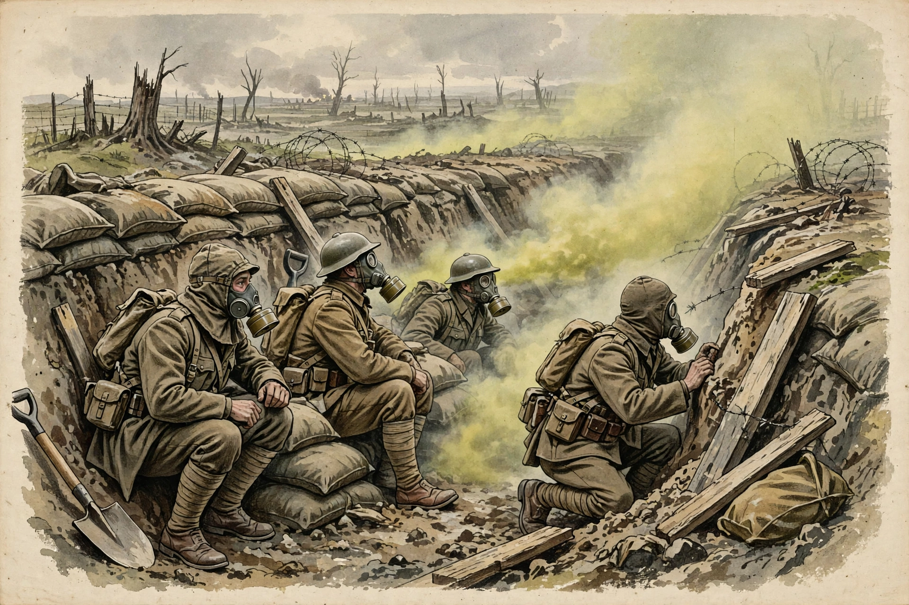

Mustard gas, or sulfur mustard, is a chemical warfare agent (bis(2-chloroethyl) sulfide) classed as a blister agent (vesicant).

Sulfur mustardExposure causes severe blistering of skin and mucous membranes, eye damage and respiratory injury, often delayed hours. It is mutagenic and carcinogenic; there is no antidote, only decontamination and supportive care.
First used by Germany near Ypres in July 1917 in the First World War, later used in several conflicts including the Iran–Iraq War. The 1925 Geneva Protocol and 1993 Chemical Weapons Convention banned its use and production; stockpiles have largely been destroyed under OPCW verification. Its study contributed to early chemotherapy: nitrogen mustards became anticancer drugs. See Chemical warfare.